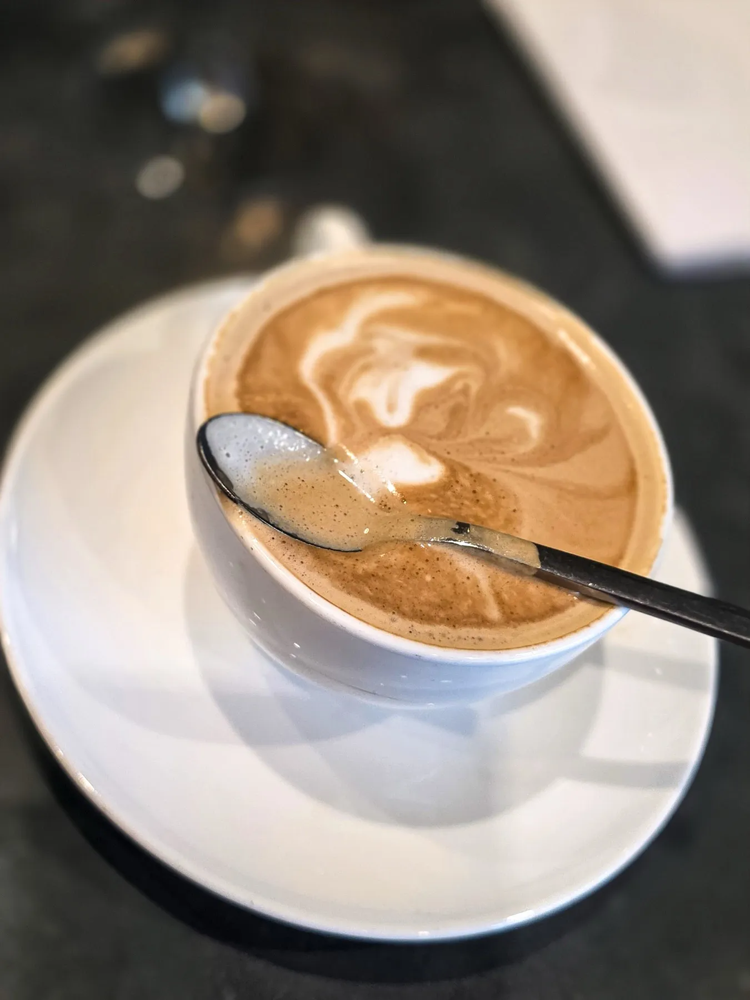

Brunch and all day
Breakfast with vegan, vegetarian, gluten free and lactose free options, plus baked goods and a seasonal griddled pumpkin bread one guest loved.

Oxford Exchange · Town 'n' Country
Oxford Exchange serves Town 'n' Country from Tampa.
Oxford Exchange is based in Tampa and works with customers from Town 'n' Country. Call (813) 253-0222 to ask about timing and directions.
Under one roof
What guests write about most.
Breakfast with vegan, vegetarian, gluten free and lactose free options, plus baked goods and a seasonal griddled pumpkin bread one guest loved.

Loose leaf teas from a whole wall of choices, including a ginger passion fruit tea guests praise, and coffee from the Buddy Brew counter.

A charming bar with its own cocktail and wine menus, poured by staff in bow ties.
4.6 ★ · 7038 Google reviews
Oxford Exchange in Tampa is such an interesting concept because there is so much happening under one roof. It’s part restaurant, part bookstore, part gift shop, part candle making experience, with meeting spaces and plenty of areas where you can post up with your laptop and get some work done. It’s definitely a bustling place with a lot of energy, but that’s also part of its charm.
Such a fun and beautiful spot for dining, drinks, and shopping. The building is large and beautifully decorated. We, a party of 2, had breakfast on a weekday here without reservations. The food was exceptional. There are lots of vegan, vegetarian, and gluten free and lactose free options for breakfast. They also have delicious baked goods and fresh ingredients.
I’m a local wedding photographer and I’ve had the pleasure of photographing multiple weddings at Oxford Exchange, including the most recent one pictured, and every time, the experience has been so amazing! The venue is truly iconic and without a doubt one of the best wedding venues in Tampa. The unique decor, the iconic staircase, checkerboard floors, and location make it like no other in Tampa.
⭐⭐⭐⭐⭐ Finally made it to Oxford Exchange, and it was everything I hoped it would be! A little piece of London right in Tampa. The architecture, beautiful woodwork, historic details, and bookstore give this place so much character. As someone who loves history, books, and unique spaces, I absolutely loved exploring it.